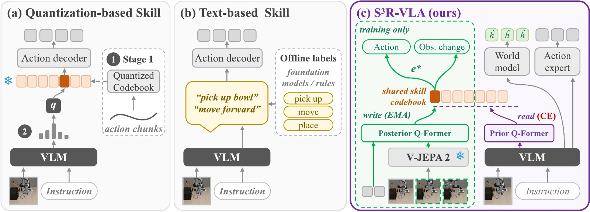
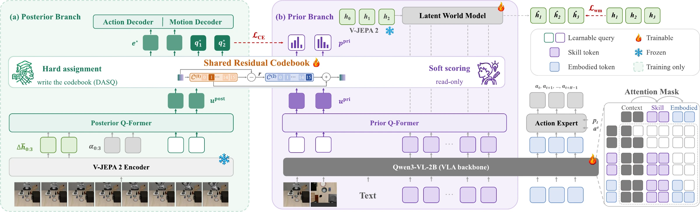
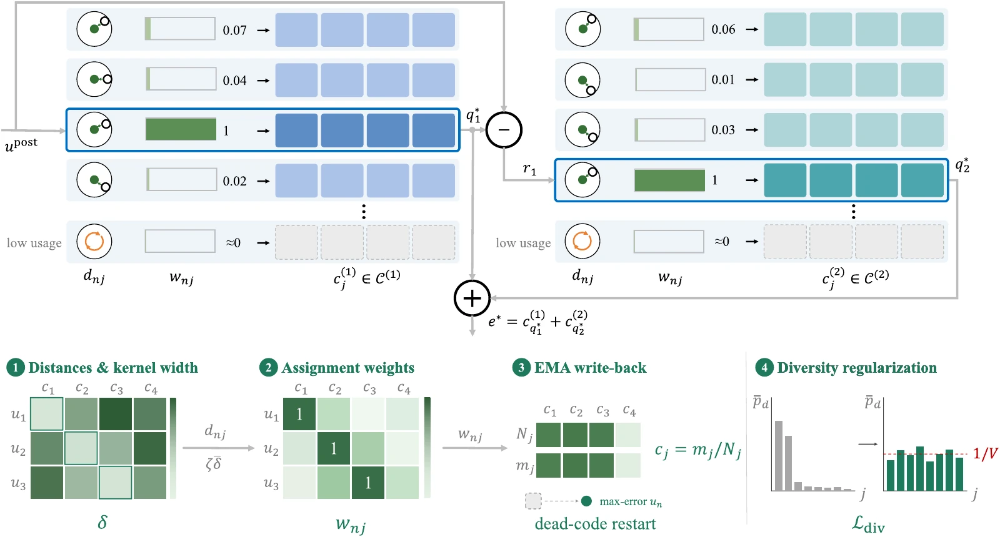
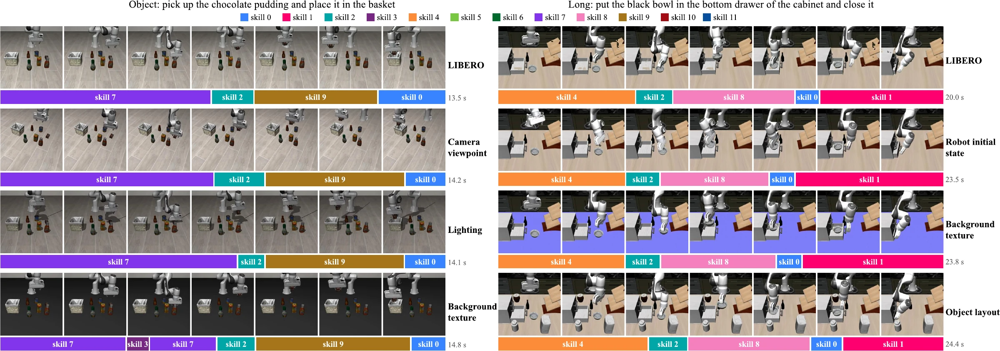

S3R-VLA
Self-Supervised Skill Learning for Robust Vision‑Language‑Action Models
Each column is one task. The top row shows the rollout on LIBERO, and the three rows below show rollouts of the same task under LIBERO-Plus perturbations. The color bar under each rollout marks its behavior phases with the first-level skill codes associated with them in the paper (Fig. 5 and Table III), with the code index above each segment.
Skills learned alongside the policy
Vision-Language-Action (VLA) models provide a unified framework for language-conditioned robotic manipulation, yet remain susceptible to out-of-distribution perturbations. Learning reusable skills may improve policy robustness by promoting invariant representations of recurring behaviors across tasks and environmental conditions. However, some existing methods overlook action-induced observation changes, limiting the reliability of skill prediction, while others rely on additional skill annotations or a separate tokenizer training stage. We propose S3R-VLA, a dual-branch framework that integrates self-supervised skill learning into policy training, where skills are jointly defined by actions and their induced observation changes within the demonstrations themselves. Specifically, a training-only posterior branch characterizes observation changes via a joint-embedding predictive architecture (JEPA) encoder and quantizes them jointly with actions into discrete skill codes, while a prior branch learns to infer these codes from current observations and language instructions to condition action generation. We further introduce drift-aware skill quantization (DASQ), which adapts the codebook to the drifting posterior distribution during joint training and thereby mitigates codebook collapse. Experiments on LIBERO and LIBERO-Plus demonstrate that S3R-VLA improves multi-task performance and achieves the highest robustness among all compared methods, raising the average success rate on LIBERO-Plus by 5.7 percentage points over the direct baseline VLA-JEPA. On 12 real-robot tasks, S3R-VLA attains an average success rate of 80.7%, exceeding the strongest baseline by 7.4 percentage points. Our findings reframe skill representations as a component learned alongside the policy, offering an effective route to improved VLA robustness.
At a glance
Self-supervised skill learning
Skills are jointly defined by actions and their induced observation changes, and are learned during policy training without skill annotations or a separate tokenizer training stage.
Posterior and prior branches
A training-only posterior branch writes skills into a shared codebook, and a prior branch infers them from current observations and language instructions to condition action generation.
Drift-aware skill quantization
DASQ adapts the codebook to the drifting posterior distribution during joint training and thereby mitigates codebook collapse.
Why learn skills from actions and observation changes?

Skill representations in VLAs. (a) Quantization-based skills are derived exclusively from action chunks through a codebook that is pretrained and then frozen before policy training. (b) Text-based skills are represented as text labels generated offline. (c) S3R-VLA learns skills jointly defined by actions and action-induced observation changes through self-supervision during policy training.
Additional training or annotation overhead
Quantization-based methods require a separate stage to pretrain an action tokenizer, which is then frozen during policy learning. Text-based methods instead require additional skill annotations based on manually defined categories.
Skills defined by actions alone
Quantization-based methods define skills solely in terms of action sequences, even though distinct action sequences may have similar effects on the environment. Such skills therefore lack observational discriminability, making them difficult for the policy to predict stably under perturbations.
Key insight. As skills represent temporally extended behaviors, the resulting observation changes should be characterized over a corresponding temporal horizon. In the latent space, the difference between future and initial observation representations provides a compact descriptor of skill-related changes. These temporal feature differences and the corresponding actions are intrinsic to demonstration trajectories and jointly constitute a self-supervised signal for skill learning.
Posterior and prior branches with a shared skill codebook

Overview of S3R-VLA. (a) The posterior branch, used only during training, quantizes the action tokens α and the V-JEPA 2 observation changes Δh̄ into a skill code q* and writes the shared codebook through DASQ. The quantized vector e* is supervised by the action decoder and the motion decoder. (b) The prior branch reads the codebook from the skill tokens and is aligned with sg[q*]. The skill tokens also condition the latent world model. The attention mask applies full attention among skill tokens and causal attention elsewhere.
Posterior branch
The posterior branch observes a window containing future frames and jointly quantizes its temporal feature differences and the corresponding action sequence into discrete skill codes from a shared codebook. The codebook is updated exclusively by this branch.
Prior branch
The prior branch predicts skill codes from the current observation and task instruction encoded by the vision-language backbone, without access to future information, and reads the codebook without updating it. A continuous action expert decouples skill discretization from continuous action generation.
Drift-aware skill quantization
To stabilize joint training, DASQ adapts the codebook to drift in the posterior outputs, thereby mitigating codebook collapse.

Drift-aware skill quantization. Top: level-wise hard assignment of upost to q1* and q2*. Each row shows the distance dnj and the assignment weight wnj. Bottom: the DASQ steps at each level, from distances and kernel width to assignment weights, EMA write-back with dead-code restart, and diversity regularization of the posterior outputs.
Multi-task performance and robustness
LIBERO contains four suites (Spatial, Object, Goal, and Long), each with 10 tasks and 50 demonstrations per task. LIBERO-Plus perturbs these 40 tasks along seven dimensions, comprising 10,030 tasks for evaluating robustness.
Simulation benchmarks
| Method | Params | LIBERO | LIBERO-Plus | |||||||||||
|---|---|---|---|---|---|---|---|---|---|---|---|---|---|---|
| Spatial | Object | Goal | Long | Avg. | Camera | Robot | Lang. | Light | BG | Noise | Layout | Avg. | ||
| (i) Generalist VLAs | ||||||||||||||
| OpenVLA-OFT | 7.7B | 97.6 | 98.4 | 97.9 | 94.5 | 97.1 | 56.4 | 31.9 | 79.5 | 88.7 | 93.3 | 75.8 | 74.2 | 71.4 |
| π0.5* | 3.4B | 98.8 | 98.2 | 98.0 | 92.4 | 96.9 | 63.5 | 73.3 | 82.8 | 93.9 | 90.5 | 79.4 | 85.7 | 81.3 |
| GR00T-N1.7 | 3.1B | 97.6 | 99.3 | 99.3 | 95.3 | 97.9 | 64.4 | 38.4 | 83.9 | 94.9 | 93.7 | 84.4 | 74.9 | 76.4 |
| (ii) VLAs based on discrete action or skill representations | ||||||||||||||
| ActionCodec* | 2.2B | 97.2 | 99.8 | 97.6 | 94.8 | 97.4 | 71.0 | 74.3 | 84.5 | 97.2 | 92.8 | 80.9 | 85.8 | 83.8 |
| MINT | 3.2B | 97.4 | 99.6 | 98.2 | 97.8 | 98.3 | 72.2 | 42.4 | 85.8 | 96.6 | 88.9 | 90.1 | 84.6 | 80.1 |
| AtomicVLA* | 4.5B | 98.8 | 98.8 | 97.2 | 96.2 | 97.8 | 71.0 | 61.5 | 84.2 | 95.4 | 92.3 | 82.0 | 85.2 | 81.7 |
| (iii) Latent-world-model-based VLAs | ||||||||||||||
| VLA-JEPA | 2.3B | 96.2 | 99.6 | 97.2 | 95.8 | 97.2 | 63.3 | 67.1 | 85.4 | 95.6 | 93.6 | 66.3 | 85.1 | 79.5 |
| Being-H0.7 | 3B | – | – | – | – | 99.2 | – | – | – | – | – | – | – | 82.1 |
| LaMP | 5.1B | 99.4 | 99.8 | 97.4 | 96.7 | 98.3 | 64.5 | 69.6 | 88.2 | 95.3 | 97.4 | 76.9 | 73.8 | 80.8 |
| S3R-VLA (ours) | 2.3B | 99.4 | 100.0 | 98.4 | 96.2 | 98.5 | 73.1 | 73.8 | 88.0 | 97.3 | 93.7 | 82.4 | 88.3 | 85.2 |
Success rates (%) on LIBERO and LIBERO-Plus. All methods are fine-tuned only on LIBERO. Params counts all parameters used at inference. Best results are in bold and second-best results are underlined. *: LIBERO-Plus results from our evaluation of the officially released weights. –: not reported.
Skill analysis
Skill-token interventions. (a) Success rates of S3R-VLA with and without masking the skill tokens. (b) Activation patching on different-skill (DS) and same-skill (SS) pairs, with VLA-JEPA as the control.
Consistency of skill codes across tasks. Left: average predicted probability of each first-level code over the windows of (a) pick, (b) place, and (c) open, close, and turn, for the 12 active codes and the 40 tasks grouped by suite. O, T, and C mark tasks containing open, turn, and close. Right: example segments of five codes from tasks in two suites, each shown by three key frames. Circled numbers match the boxed cells on the left.

Inference example of S3R-VLA. For each task, the top row shows the rollout on LIBERO, and the remaining three rows show rollouts of the same task under the indicated LIBERO-Plus perturbation. Color bars show the first-level codes predicted by the prior branch (indices as in the consistency figure above), and numbers give the execution time. Switches shorter than two forward predictions are omitted.
Real-robot experiments
We deploy S3R-VLA on 12 tasks with a Rethink Sawyer arm, both under in-distribution conditions and under four perturbations absent from the demonstrations. S3R-VLA achieves the highest success rate under all five conditions, with an average of 80.7%. Its advantage over VLA-JEPA emerges under perturbations and is largest under lighting and object layout changes (19.2 and 15.9 percentage points).
Real-robot success rates (%), averaged over 12 tasks with 10 trials per task and condition. Avg. is the mean over the five conditions.
VLA-JEPA vs. S3R-VLA
Paired rollouts of VLA-JEPA and S3R-VLA on the same LIBERO-Plus tasks under perturbations.
BibTeX
@article{liu2026s3rvla,
title = {S$^3$R-VLA: Self-Supervised Skill Learning for Robust Vision-Language-Action Models},
author = {Liu, Bo and Zhao, Qiyan and Zhang, Liming and Yang, Jingtao and Huang, Jun and Zhang, Xu-Yao and Liu, Yong},
year = {2026},
note = {Manuscript}
}